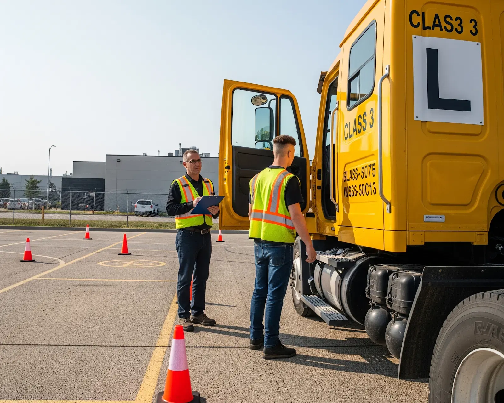

Our Most Popular Driving Courses in Manitoba

Class 1 Driver Training (121.5 Hours)
Our Class 1 license programs (121.5 hours) are designed to meet Manitoba's MELT requirements and prepare you for high-paying jobs in long-haul trucking, freight logistics, and commercial transport.
Available in: Winnipeg | Steinbach
Class 1 Driver Training (244 Hours)
Our Class 1 license programs (244 hours) are designed to meet Manitoba's MELT requirements and prepare you for high-paying jobs in long-haul trucking, freight logistics, and commercial transport.
Available in: Winnipeg | Steinbach

Class 3 Driver Training
Want to drive dump trucks, straight trucks, or service vehicles? Our Class 3 license training is ideal for drivers entering construction, municipal, and waste management careers.
Available in: Winnipeg | Steinbach

Class 5 Driving Lessons (Beginner & GDL)
For those starting their driving journey, our Class 5 driving lessons help you build confidence and prepare for the GDL system in Manitoba. Choose between private lessons, brush-up sessions, or complete beginner programs.
Available in: Winnipeg | Steinbach

Air Brake Endorsement Course
Mandatory for anyone driving Class 1 or Class 3 vehicles, our Air Brake Endorsement course ensures you are certified to operate heavy vehicles with advanced braking systems.
Available in: Winnipeg | Steinbach
Exclusive Safety & Compliance Courses
Enhance your career with our short certification courses that meet industry requirements for commercial drivers:
- Hours of Service
- Load Securement
- Dangerous Goods
- Winter Driving Course
- Vehicle Inspection